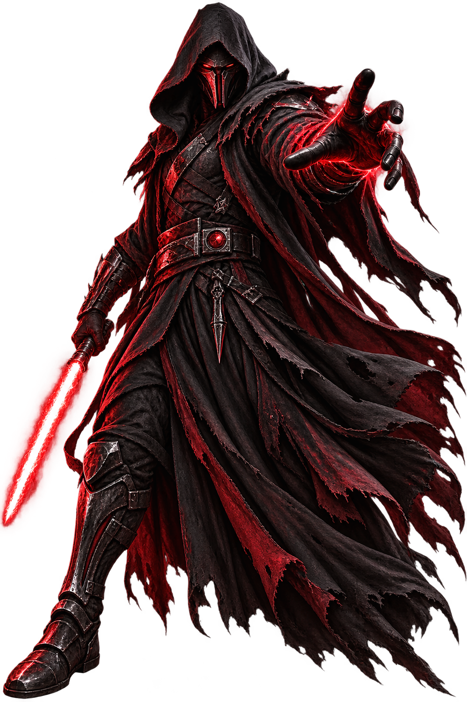
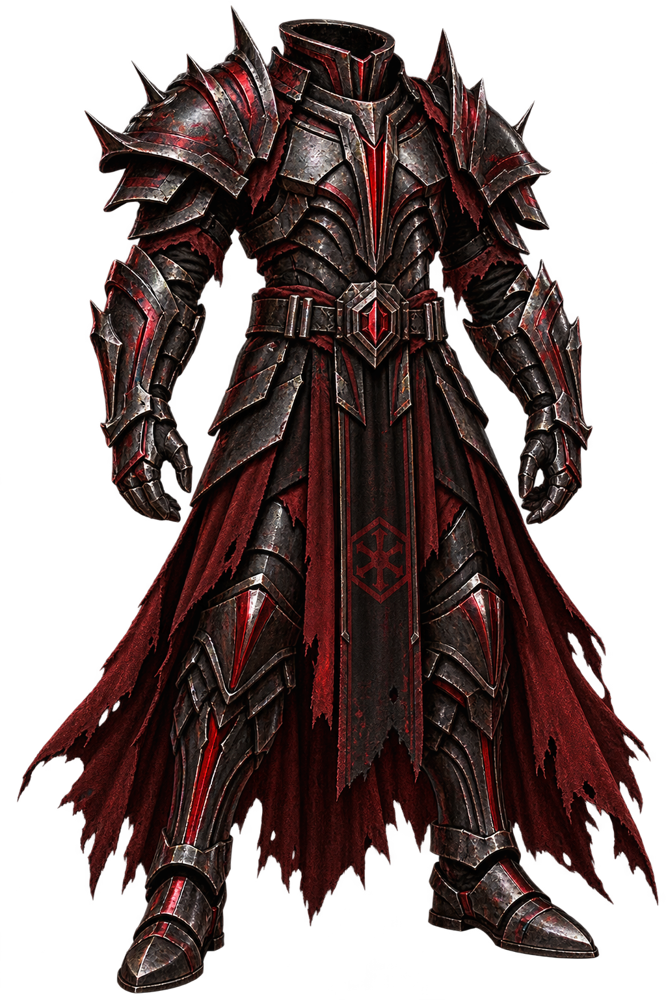
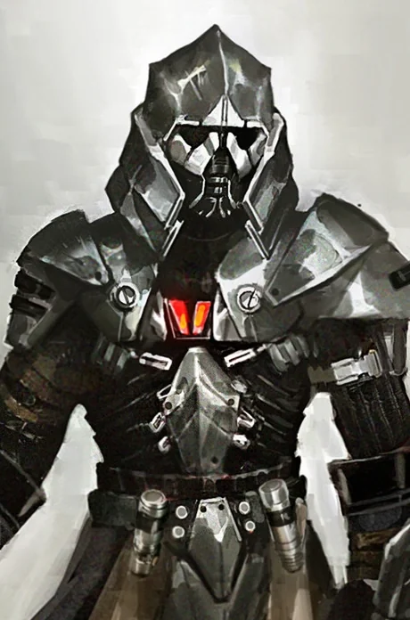
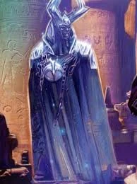

Caste Des Ravageurs — Créé par Zalakar — — Illustrer par Illuvatar —

Présentation
Les Ravageurs de l'empire sith ont une histoire assez floue, nous n'en savons peu sur cette dernière, mais ce qui est sûr c'est qu'ils étaient déjà présents avant la Guerre contre la République.
Leurs enseignements au sabre sont tirés de Tulak Hord qui avait une très grande maîtrise du sabre, et de Marka Ragnos qui lui, leur donnera des enseignements philosophiques selon sa philosophie.
Il est considéré comme le Chef De Guerre ou le
Dernier Rempart de l'Empire.
En effet, se renforçant grâce à ses émotions et à son code sith, il
devient l'une des plus puissantes machines de guerres de l'empire,
rien de l'arrête jusqu'à faire comme le Dark Sion, faire abstraction
de sa douleur et de ses émotions pour se rendre invincible et immortel
face à son ennemis mais en payant les conséquences irréversibles sur
son corps.
De plus, le Ravageur Sith est un fin stratège et meneur, d'où son nom et son titre de Chef De Guerre.
Il ne recule devant aucun combat et a pour seul but la défaite écrasante de son adversaire et est fort mentalement et physiquement.
Histoire Brève Des Ravageurs
Comme dit, le Ravageur est le bras armé de l'Empire, le bourreau de ses ennemis et le bouclier de ses alliés.
Les ravageurs ont été formés par les anciens gardes personnels de l'Empereur Marka Ragnos lors de sa mort, ses gardes ont eu pour mission de cacher divers artéfacts. Et à la suite de cela, ils ont formé un ordre de guerrier qu'on appelait les ravageurs.
C'est de là que découle le nom, l'Ordre des Ravageurs. Ils étaient de puissants guerriers sith, avec une affinité dans la force leurs permettant de la manier à leur guise. Ce qui s'ensuivit des années plus tard, des générations plus tard de la caste, avec les ravageurs sith.
Prérequis Caste des Ravageurs
Résistance à la torture
Le Guerrier est soumis à une épreuve de souffrance physique destinée à tester son endurance et sa volonté. Il doit démontrer qu'il est capable de supporter la douleur sans perdre le contrôle, abandonner ou laisser son esprit céder.
Connaissance des Ravageurs
Le candidat est interrogé sur les fondements de la caste : son rôle au sein de l'Empire, sa philosophie du combat, ses devoirs et les principes qui distinguent le Ravageur des autres voies guerrières. L'objectif est de vérifier qu'il comprend réellement la voie qu'il souhaite emprunter.
Épreuve de combat
Le Guerrier doit démontrer ses capacités martiales au cours d'un affrontement supervisé. Force, maîtrise du sabre, agressivité contrôlée, résistance et capacité d'adaptation sont observées. La victoire compte moins que la manière dont le candidat affronte l'adversité.
Théorie et stratégie militaire
Une situation militaire fictive est présentée au candidat. Celui-ci doit analyser les forces en présence, identifier les priorités et proposer une stratégie cohérente. Un Ravageur doit être capable de comprendre un champ de bataille et de prendre des décisions efficaces, et non simplement de se jeter sur l'ennemi. Prérequis Caste des Ravageurs
L'équipement des Ravageurs
Ayant un équipement basé sur celui des Guerriers Sith, un ravageur se voit doté d'une lourde Armure pour l'amener à encaisser plus facilement les chocs subis, sous ces épaisses armures les Ravageur étaient dotés par le passé d'implants visant à améliorer leur compétences physique ,bien que ces implants sont de moins en moins répandu cela ne faisait pas tout.
Entraîné depuis leur jeunesse ou leurs arrivé à l'académie jusqu'à la mort pour les plus faibles, l'entraînement physique et mentale des Ravageur se voulait excessivement dur et violent afin de les endurcir pour que ceux ci perdent tout sentiment de peur et d'abandon face à l'ennemi.

Représentation du Ravageur
Chef d'armée
Le Ravageur est un Sith qui dirige les autres grâce à son leadership.
Honorable
Le Ravageur fait preuve d'honneur en tout temps et en tout lieu.
Loyal
Le Ravageur éprouve une loyauté sans faille envers l'Empereur, son Empire et les autres Sith.
Pédagogue
Le Ravageur est un excellent professeur, il apprend les arts Sith à la jeunesse.
Glorieux
Le Ravageur cherche à devenir glorieux par ses actions et ses faits d'armes.
Symbole
Il est l'incarnation de la terreur. Il la représente par son attitude et son accoutrement.
Piliers et philosophie du Ravageur
Honneur
Le Ravageur se doit d'être un guerrier honorable. Il gagne ses combats seuls, sans coup fourbe. Il fait face à ses adversaires et se mettant en garde. Les attaques dans le dos sont une insulte pour lui et sa caste.
Loyauté
Elle est l'essence même du Ravageur. Sans loyauté envers son Empire ou sa caste, le ravageur ne vaut pas plus qu'un esclave.
Gloire
Il cherche à récolter de la gloire dans toutes ses actions. Un Ravageur assouvit sa domination par ses faits d'armes.
Les rôles du Ravageur
Chef de guerre
La république prospère est c'est une insulte. Le Ravageur doit conquérir toute la galaxie pour son Empereur.
Maître d'armes
Les Ravageurs maîtrisent les arts martiaux Sith, ils doivent les enseigner à la Jeunesse afin de les faire prospérer.
Symbole
Le Ravageur est un symbole. Terreur est respect. Voilà ce que doit inspirer un ravageur par sa prestance.
Combattant
Le Ravageur est un militaire, un duelliste et un combattant. Il se bat pour l'Empire au prix de sa vie et de celles de ses camarades.
Le Code des Ravageurs
La Force est une tempête, et je suis son épicentre.
La puissance brute est la seule vérité.
Ceux qui n'y survivent sont indignes de la vie.
Je suis le mur infranchissable, le marteau qui brise les résistances et écrase les faibles.
La destruction n'est pas un chaos, c'est un outil entre les mains des forts.
Je suis la pierre angulaire de l'Empire, et son bras vengeur.
Le Serment des Ravageurs
Ma lame est forgée dans les flammes de la passion et de la colère,
Mes pensées embrassent le chaos qui pulse dans les veines mêmes de notre existence.
À travers chaque coup asséné, chaque conspiration ourdie, je glorifie l'héritage des Sith, portant avec fierté la marque du destin funeste.
En tant que disciple des Ravageurs, je m'engage à déchirer les chaînes de la faiblesse qui emprisonnent l'esprit des faibles.
Mon allégeance, une offrande de loyauté forgée dans le feu, transcende la simple adhésion.
C'est un pacte tissé avec les ombres qui murmurent des promesses de grandeur et de domination.
Que les étoiles tremblent devant notre avènement, que la peur soit notre alliée et que la haine soit notre guide.
Nous déchaînerons les torrents obscurs de la Force, submergeant tout sur notre passage.
Les Titres honorifiques
Père des Ravageurs
Il est l'image qui inspire toute la caste. Le plus grand Ravageur de son époque. Il incarne parfaitement ce qu'est un Ravageur. Tous les Ravageurs doivent prendre exemple sur lui.
Souverain de Guerre
Dirigeant Militaire incontesté de la caste. Il est celui qui a le plus prouvé sur le champ de bataille. C'est un leader inébranlable.
Maître de Guerre
Maître du commandement, il est un ravageur inflexible qui est prêt à tout pour l'emporter. Passerelle pour devenir Maître de Caste.
Tyran de Guerre
Ravageur ayant su faire ses preuves. Passerelle au rang de Grand Ravageur.
Grandes Figures Des Ravageurs
Tulak Hord
Tulak Hord est né sur Korriban, naissant avec une fascinante aptitude au pour l'escrime et les arts sith.
Il mena un duel contre un Grand Assassin de la Race des Dashades, qui devint par la suite son plus précieux allié et répondait au nom de Khem Val. C'est comme cela qu'il perfectionnera son art sith au combat par exemple.
Il contribuera avec ses connaissances et écrits laissés sur l'art du combat à contribuer à l'amélioration de la caste des Ravageurs grâce à ses artéfacts.
Il est celui qui a découvert le secret de la vie éternelle mais qui ne l'a jamais partagée (On suppose qu'il a dû faire comme le Dark Sion).
Le moteur rouge se trouve dans son tombeau.

Marka Ragnos
Il était le Neuvième Seigneur Noir des Sith, il crééra la philosophie des Ravageurs.
Son rival était le seigneur Simus, qu'il décapita lors d'un duel.
Sa politique et philosophie était de repli et de protectionnisme, préférant faire prospérer l'Empire de l'intérieur. Il mena l'Empire Sith à son âge d'or et mena des gerrres brutales et impitoyables contre ses ennemis Sith.
Marka Ragnos maniait une épée sith à lame améliorée par la sorcellerie sith, et qui pouvait se cacher dans son sceptre.
Il est le seul seigneur noir à mourir de vieillesse.
